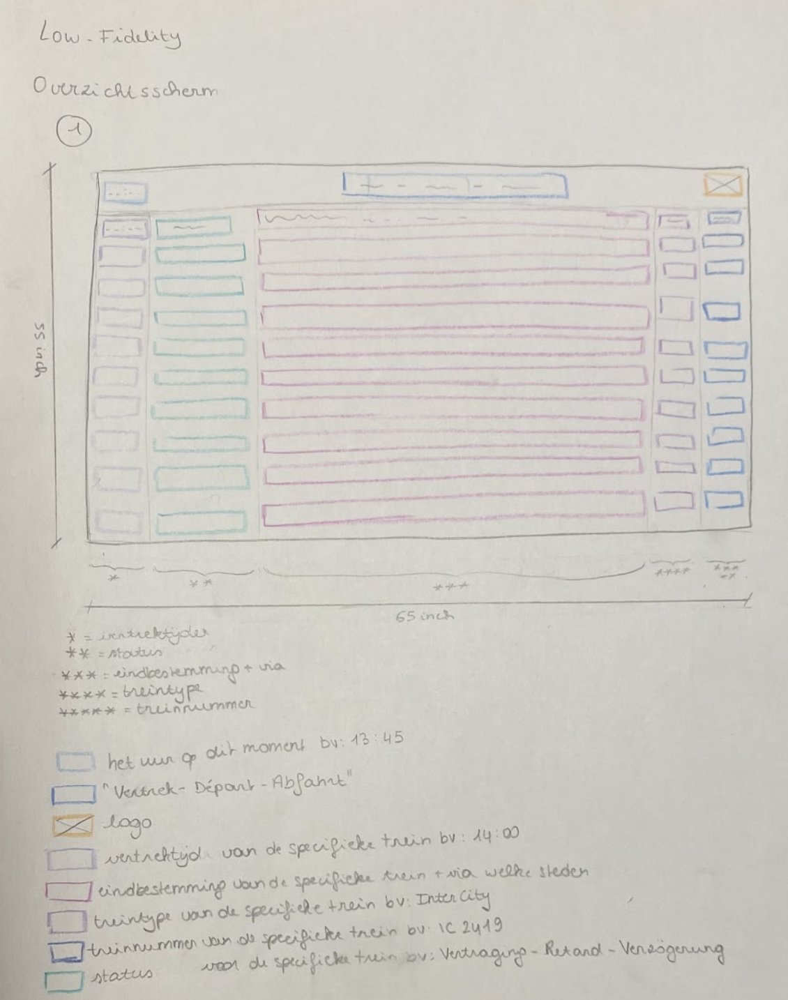
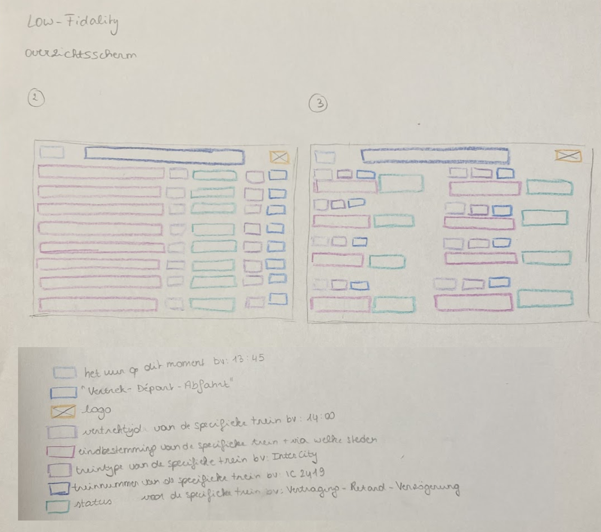
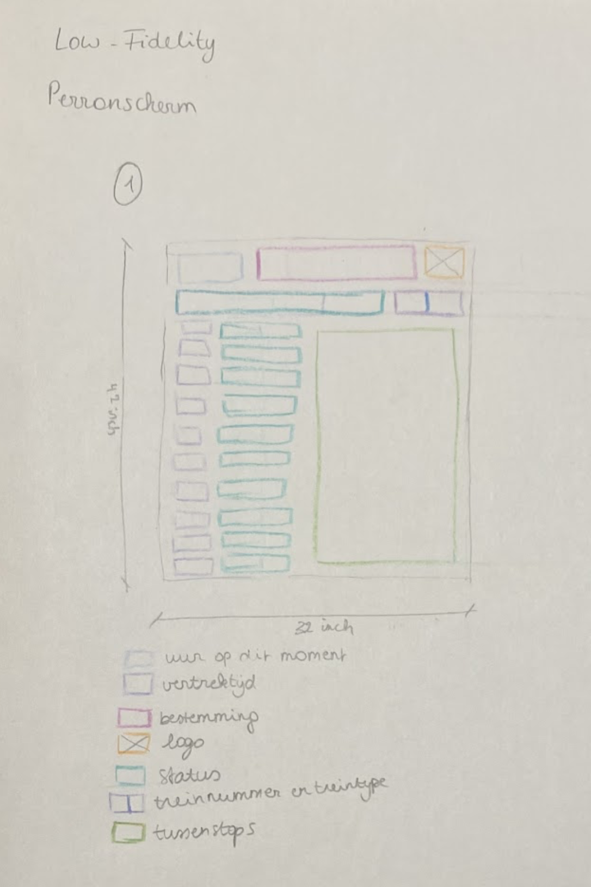
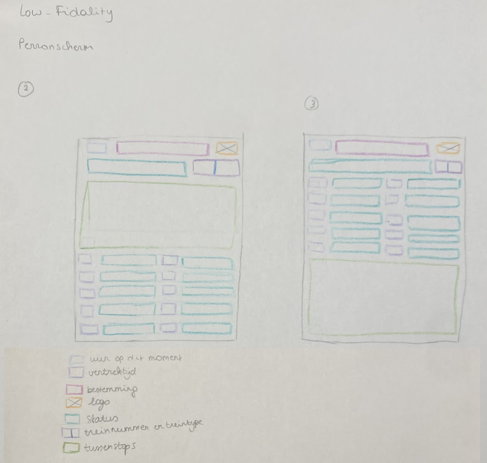
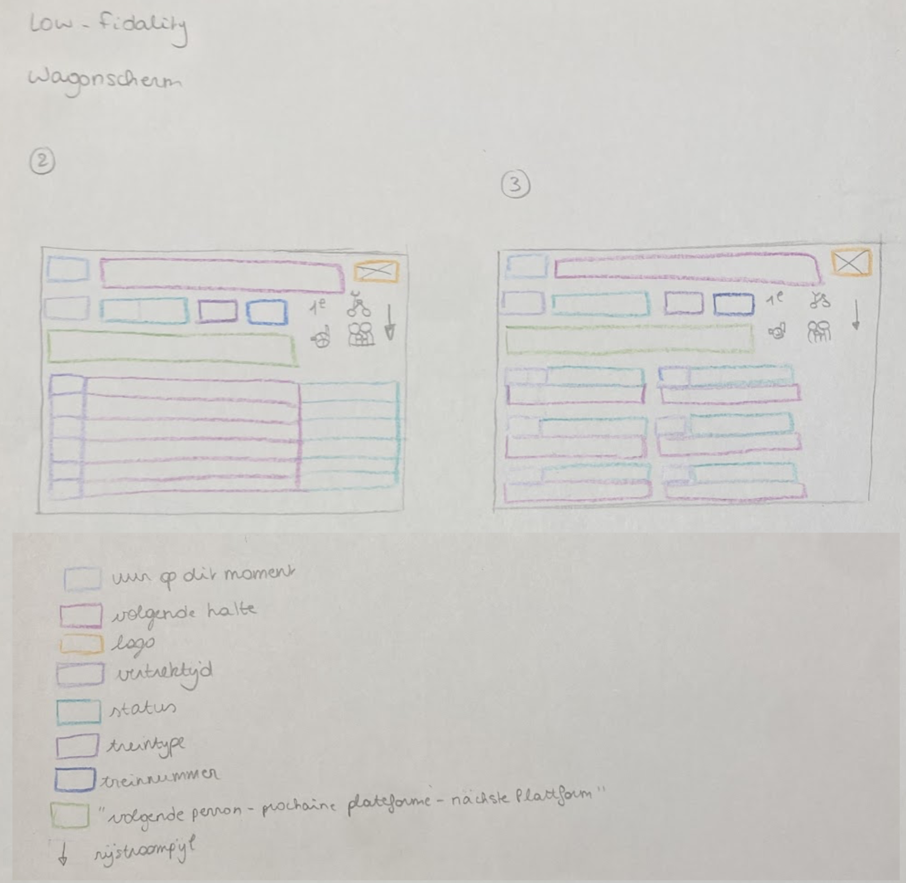
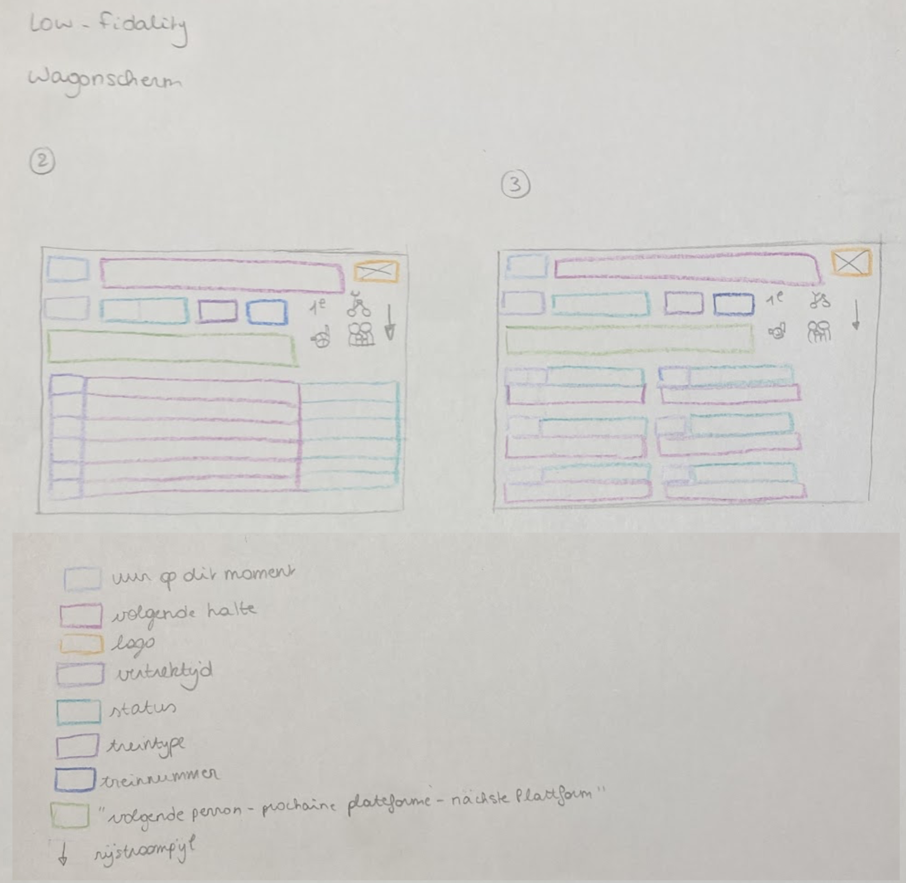

Week 1
Op 15/09 kregen we de opdracht om drie keer drie low fidelity schermen
te maken voor in een treinstation.
We moesten hiervoor eerst wat opzoekwerk doen over overzichtsschermen,
perronschermen en wagonschermen.
Gebaseerd op de gegeven afmetingen, maakte ik negen schetsen en hield ik rekening met hiërarchie, positie en verdeling.
Overzichtsscherm:


Perronscherm


Wagonscherm
 
